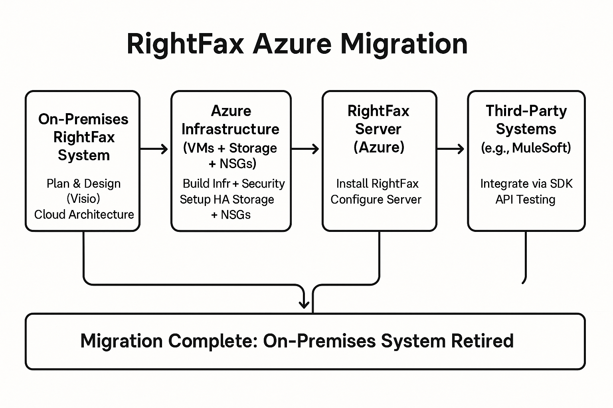

On-Premises to Cloud Migration: RightFax Azure Implementation

Duration: May 2023 - Aug 2023
Project Overview: Led the full lifecycle of a RightFax migration project, transitioning a financial institution’s on-premises fax infrastructure to a modern, cloud-based architecture in Microsoft Azure.
Key Achievements:
- Designed the network and systems architecture using Microsoft Visio.
- Built out the Azure infrastructure, including high availability storage and network security controls.
- Installed and configured the latest version of the RightFax server on cloud-based virtual machines.
- Integrated RightFax with third-party systems such as MuleSoft using the RightFax SDK.
Skills:
Cloud Computing · Microsoft Azure · Network Infrastructure · Network Security · API Testing · Project Delivery